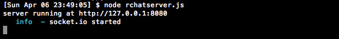
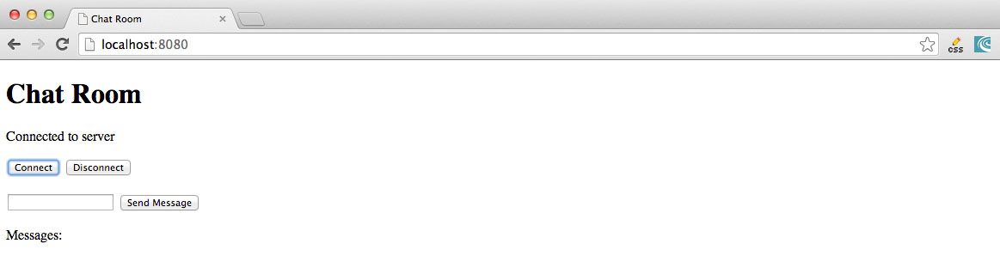
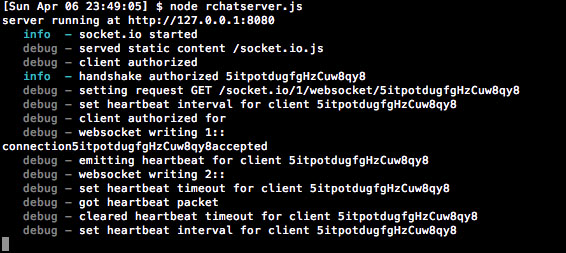
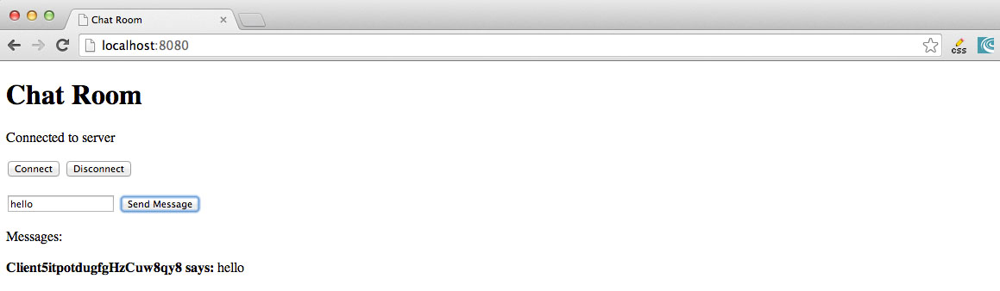
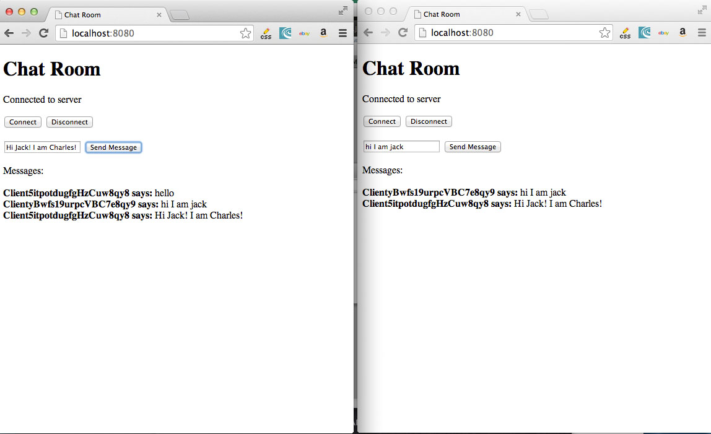

rchatserver.jsUsing Node.js, create a real time multi-client chat application.
var http = require('http');
var url = require('url');
var fs = require('fs');
var server;
server = http.createServer(function(request,response){ // declare http server object
//callback has inputs of request and reponse.
var path = url.parse(request.url).pathname; // pathname:The path section of the URL,
//that comes after the host and before the
//query, including the initial slash if present.
switch(path){
case '/':
fs.readFile(__dirname + '/rtchat.html', function(err, data){
if (err) return send404(response);
response.writeHead(200, {'Content-Type': 'text/html'})
response.write(data, 'utf8');
response.end();
});
break;
default: send404(response); //If the client request a route we don't know.
//we just want to display an error message.
}
});
send404 = function(response){//error function
response.writeHead(404);
response.write('Error:404\n');//displays error message if user enters a path
// we don't know about.
response.end();
}
//use node module socket.io to manage persistent open connections between our clients and our server.
//This will enable us to have a real time chat experience by allowing the client send the server messages.
//to broadcast and also allow the server to broadcast the messages back to the clients in real time.
//first use npm to install the socket. In terminal type: npm install socket.io
server.listen(8080,"127.0.0.1"); //listen on the 8080 port
console.log("server running at http://127.0.0.1:8080")
var io = require('socket.io').listen(server);
//connection listener
io.sockets.on('connection', function(socket){
console.log('connection' + socket.id + "accepted");
//disconnect listener
socket.on("disconnect", function(){
console.log("connection" + socket.id + " terminated.");
});
socket.on("message",function(message){
console.log("Received message: " + message + " - from client " + socket.id);
io.sockets.emit('chat', socket.id, message);
});
});
rtchat.html
<!DOCTYPE html>
<html>
<head>
<title> Chat Room </title>
<script src="/socket.io/socket.io.js"></script>
<script src="https://ajax.googleapis.com/ajax/libs/jquery/1.6.4/jquery.min.js"></script>
</head>
<body>
<script type="text/javascript">
var socket;
var firstconnect= true;
function connect(){
if(firstconnect){
socket=io.connect(null);
socket.on("connect",function(){$('#status').html('Connected to server');});
socket.on("disconnect",function(){$('#status').html('Disconnected to server');});
socket.on("reconnecting",function(){$('#status').html('Reconnected to server');});
socket.on("reconnect_failed",function(){$('#status').html('reconnect_failed');});
socket.on('chat', function(client, message){
$('#messages').append('<b> Client' + client + " says: </b> " + message + '<br>');
});
firstconnect=false;
}
else {
socket.socket_reconnect();
}
}
function disconnect(){
socket.disconnect();
}
function send(){
socket.send($('#message').val());
};
</script>
<h1> Chat Room </h1>
<div><p id="status">Waiting for input </p> </div>
<button id="connect" onClick="connect()"/> Connect </button>
<button id="disconnect" onClick="disconnect()"/>Disconnect</button> <br><br>
<input id="message"></input>
<button id="send" onClick="send()"/> Send Message </button>
<br>
<br> Messages: <br><br>
<div id="messages"> </div>
</body>
</html>
Implementation
Launch the chat server  Test your client page by going to your browser and typing in http://localhost:8080. Once it opens up, click connect  Your terminal should look something like this:  Now type in a message:  Pull up another browser and go to http://localhost:8080. Now it is time to chat to each other.  You've just created a multi-client Chat App!